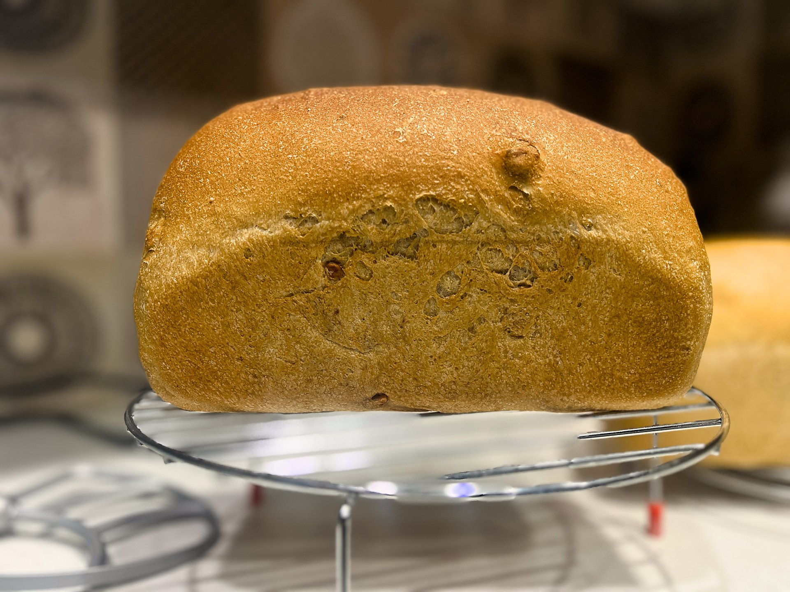

What Makes Our Bread Different
- No improvers
- No bleaching agents
- No commercial enhancers
- No preservatives
- Naturally fermented
- Simple ingredients

A small-batch bakery focused on slow-fermented breads made with time, care, and simple ingredients.

Soft, lightly sweet, and made for everyday use.

A nutty and hearty loaf with seeds and grains for texture and depth.


All images are from our kitchen.
Made with a high proportion of whole wheat for a rustic, fuller, deeper flavor.

Our breads are made in small batches using time-intensive fermentation and without commercial additives. This requires more time, care, and ingredients compared to industrial bread.
Improvers are additives used in commercial baking to speed up production and standardize results. We do not use them, allowing the dough to develop naturally.
Preferment is a technique where part of the dough is fermented in advance. It improves flavor, texture, and digestibility.
Without additives, our bread has a more natural texture and structure. Whole wheat breads may feel denser, reflecting the grain itself.
You can place your order via WhatsApp. We’ll confirm availability and schedule your bake.
Orders are typically ready the next day. A 24-hour notice is preferred as we bake in small batches.
Our breads do not contain preservatives. They are best consumed within 2–3 days.
Store in a cool, dry place. For longer storage, refrigerate or freeze and toast before serving.
No. Our breads are made without preservatives, improvers, or commercial enhancers.
Yes. All images on this site are of bread we bake in our kitchen. We do not use stock or AI-generated visuals.
Some breads can be adjusted based on preference, such as changing the proportion of whole wheat. Availability depends on the dough and batch, so we recommend checking with us on WhatsApp before placing your order.
Message on WhatsApp
Contact Us